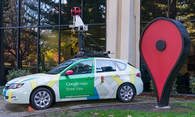
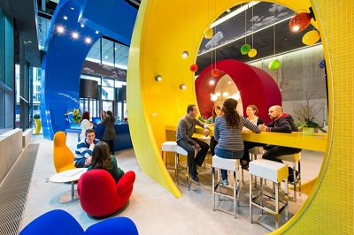

A Google egyszerre olyan sok dologgal foglalkozik, hogy néha elég nehéz nyomon követni a tevékenységét.
- A Google több mint 200 tényezőt vesz figyelembe, amikor a keresőjét használjuk.
- A kereső 1998-as indulásakor naponta mintegy 500 ezernyi keresést indítottak el rajta a felhasználók. Ma ez a szám kétmillió – másodpercenként.
- A Youtube-felhasználók 300 órányi tartalmat töltenek fel a videómegosztóra percenként.
- 2014-ben mintegy egymilliárd androidos eszközt szállított ki a Google. Ez azt jelenti, hogy a keresőóriás által fejlesztett operációs rendszernek 81 százalékos részesedése van a piacon.
- Még 2013-ban 5 percre leálltak a Google szolgáltatásai. A globális internetforgalom ezekben a percekben 40 százalékkal esett vissza.
- Másodpercenként több mint 2 millió keresést rögzítenek.
- 2014-ben a cég mintegy 24 vállalatot vásárolt meg.
- A Google Street View 2007-es indulása óta mintegy 7,2 millió mérföldnyi utat fényképeztek le. 
- A Google-nek több mint 53 600 munkavállalója van 70 irodában, több mint 40 országban, szerte a világon. És ők mind ingyen ebédelnek a munkahelyükön! 